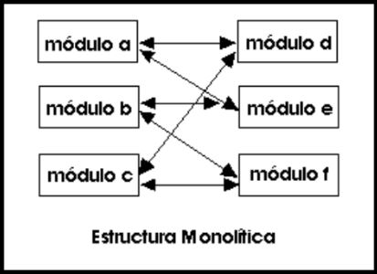
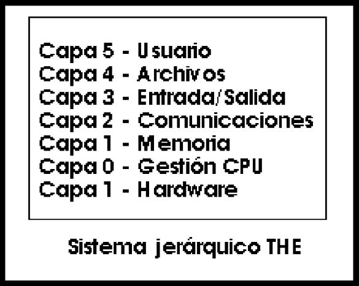

Sistemas Operativos
¿Qué es un Sistema Operativo?
Sistema tipo software que conirola la computadora y adminisira los servicios y sus funciones como asi también la ejecucién de otros programas compatibles con este
Ejemplos de familias de sistemas operativos:
- Windows
- Unix
- Linux
- Mac Os
- etc.
Un Sistema Operativo permite interactuar con el hardware de computadoras, teléfonos celulares, PDAS, etc. y eiecutar programas compatibles en estos. Permite controlar las asignaciones de memoria , ordenar las solicitudes al sistema, controlar los dispositivos de entrada y salida, facilitar la conexion a redes y el manejo de archivos
Servicios del Sistema Operativo
Ejecución de programas: capacidad del sistema de cargar un programa en memoria y ejecutarlo.
Operaciones de E/S: dado que los programas no pueden ejecutar operaciones de E/S directamente, el sistema operativo debe proveer medios para
realizarlas.
Manipulaciones del sistema de archivos: capacidad de los programas de leer, escribir, crear y borrar archivos.
Comunicaciones: intercambio de informacion entre procesos ejecutando en la misma computadora o en otra conectada a travez de una red. Implementada
mediante memoria compratida o por paso de mensajes.
Deteccion de errores: asegurar un computo correcto mediante la deteccién de errore en el CPU, memoria, dispositivos de E/S o
en los programas de usuario
Evolución de los Sistemas Operativos
Monitor simple Residente
Un solo fragmento de cdédigo que se enlazaba con los programas, cargandose todo en memoria y ejecutandose junto con el programa (“biblioteca en tiempo de ejecución")
Sistema por Lotes
Se pueden considerar como los primeros SSOOs reales, este estaba almacenado en la memoria, cargaba un unico trabajo en memoria (desde el lector de tarjetas) , Ejercutaba el trabajo y cargaba el siguiente. Las tarjetas de control indicaban que hacer al SSOO, este contaba con muchos problemos como lo son:
- Largas esperas entre lotes de trabajo
- La dificultad de manejar la concurrencia entre E/S y ejecucién en CPU ayudé a estimular el desarrollo de los SSOO multiprogramados
- Carecen de interactividad entre el usuario y los trabajos que se ejecutan
multiprogramación
Tiene como objetivo aprovechar los tiempos de espera de un trabajo en la CPU para ejecutar instrucciones de otro trabajo, manteniendo los trabajos simultaneamente en memoria, eligiendo el trabajo a conmutar y el uso de interrupciones o DMA, optimizando la productividad del sistema.
Elementos necesarios
- Las rutinas de E/S deben estar suministradas por el SSOO
- Debe de existir una gestión de memoria para poder asignar y controlar la memoria
- Debe existir una planificacién de la CPU. El SSOO debe elegir uno de entre los diferentes trabajos listos para ejecutarse que hay en memoria
- La asignación de los dispositivos es realizada por el SSOO
Tiempo compartido
Objetivo: Permitir la interaccién entre el usuario y el trabajo que se esta ejecutando.
Metodo: Cada usuario tiene la impresión de disponer planificacién de la CPU para proporcionar a cada usuario una pequeña proporción del
tiempo de CPU
Sistemas de Tiempo Real
El factor tiempo se vuelve una variante fundamental
Muy utilizados en sistemas empotrados
El sistema operativo debe respondersiempre dentro de los márgenes requeridos por el sistema controlado, si nossalimos de esos márgenes, tendremos que buscar otras soluciones.
Estructuración de los Sistemas Operativos
| Estructura Monolítica | Estructura en Capas |
|---|---|
|
Es la estructura de los primeros sistemas operativos constituidos fundamentalmente por un solo programa compuesto de un conjunto de
procedimientos entrelazados de tal forma que cada uno puede llamar a cualquier otro. Generalmente están hechos a medida, por lo que son eficientes y rápidos en su ejecución y gestión, pero por lo mismo carecen de flexibilidad para soportar diferentes ambientes de trabajo o tipos de aplicaciones. |
A medida que fueron creciendo las necesidades de los usuarios y se perfeccionaron los sistemas, se hizo necesaria una mayor organización del
software, del sistema operativo, donde una parte del sistema contenía subpartes y esto organizado en forma de niveles. Se dividió el sistema operativo en pequeñas partes, de tal forma que cada una de ellas estuviera perfectamente definida y con un claro interface con el resto de elementos. Se constituyó una estructura jerárquica o de niveles en los sistemas operativos, el primero de los cuales fue denominado THE (Technische Hogeschool, Eindhoven), de Dijkstra, que se utilizó con fines didácticos. Se puede pensar también en estos sistemas como si fueran `multicapa'. Multics y Unix caen en esa categoría. |
|  |  |
Máquina Virtual
Se trata de un tipo de sistemas operativos que presentan una interface a cada proceso, mostrando una máquina que parece idéntica a la máquina real subyacente. Estos sistemas operativos separan dos conceptos que suelen estar unidos en el resto de sistemas: la multiprogramación y la máquina extendida. El objetivo de los sistemas operativos de máquina virtual es el de integrar distintos sistemas operativos dando la sensación de ser varias máquinas diferentes.
El núcleo de estos sistemas operativos se denomina monitor virtual y tiene como misión llevar a cabo la multiprogramación, presentando a los niveles superiores tantas máquinas virtuales como se soliciten. Estas máquinas virtuales no son máquinas extendidas, sino una réplica de la máquina real, de manera que en cada una de ellas se pueda ejecutar un sistema operativo diferente, que será el que ofrezca la máquina extendida al usuario.
Cliente-servidor(Microkernel)
El tipo más reciente de sistemas operativos es el denominado
cliente-servidor, que puede ser ejecutado en la mayoría de las
computadoras, ya sean grandes o pequeñas.
Este sistema sirve para toda clase de aplicaciones por tanto, es de propósito general y cumple con las mismas actividades que los sistemas
operativos convencionales.
El núcleo tiene como misión establecer la comunicación y los servidores. Los procesos pueden ser tanto servidores como clientes. Por ejemplo,
un programa de aplicación normal es un cliente que llama al servidor correspondiente para acceder a un archivo o realizar una operación de
entrada/salida sobre un dispositivo concreto. A su vez, un proceso cliente puede actuar como servidor para otro".
CMD y su Importancia
MS-DOS también conocido como el sistema operativo desarrollado por la compañía de Microsoft, el cual controla una gran cantidad de situaciones como lo son las asignaciones de los recursos a los ordenadores, como lo es el disco duro, la memoria hasta la administración de todos los dispositivos de entrada y salida como el monitor, cornetas, impresoras, entre muchos otros elementos.
Comandos importantes del CMD
- CD..: Cambia al directorio superior.
- CD: Cambia al directorio inferior.
- CD/: Cambia directamente al directorio raíz.
- COPY: Copiar los archivos.
- COPY CON: Copia a un archivo el texto tecleado hasta pulsar “Ctrl-Z”.
- DATE: Cambia la fecha del sistema o permite solo visualizarla.
- DEL: Sirve para borrar algún archivo, siempre y cuando este no este oculto en el fichero.
- ECHO: Muestra un texto especificado en la pantalla.
- RD o RMDIR: Borra un directorio que esté completamente vacío.
- DIR: Enseña una lista con todos los archivos y directorios que se encuentren en el directorio del disco.
- EXIT: Permite salir de una de las sesiones.
- TIME: Permite visualizar o modificar la hora del reloj.
- VER: Enseña la versión del sistema operativo.
- TYPE: Muestra el contenido del fichero.
- VOL: Sirve para ver la etiqueta del disco duro y su volumen si posee.